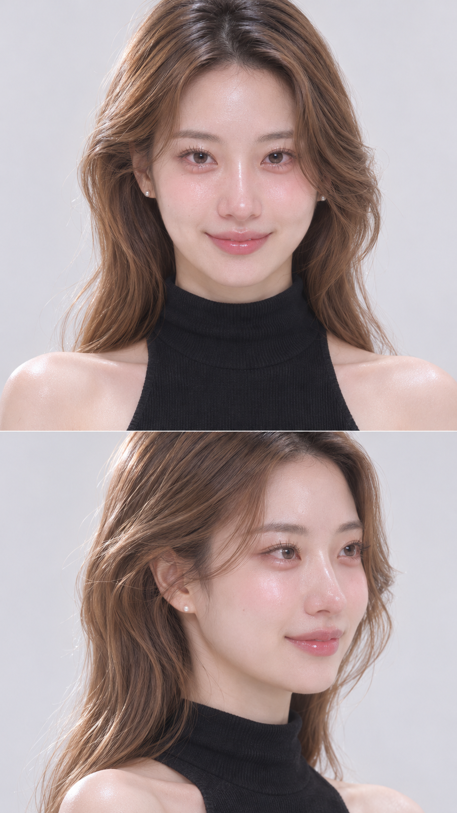
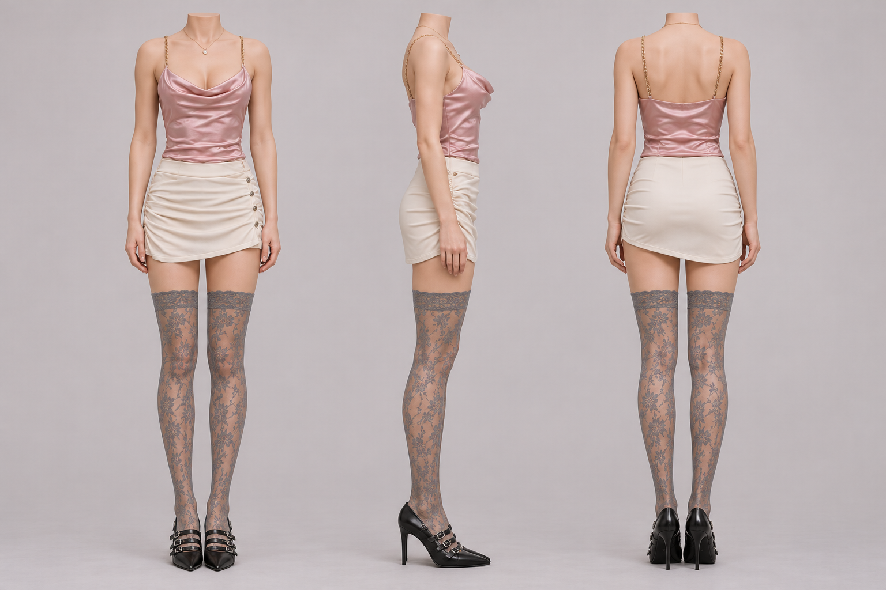
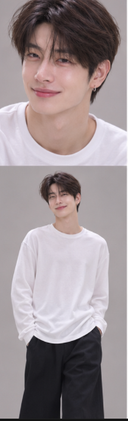
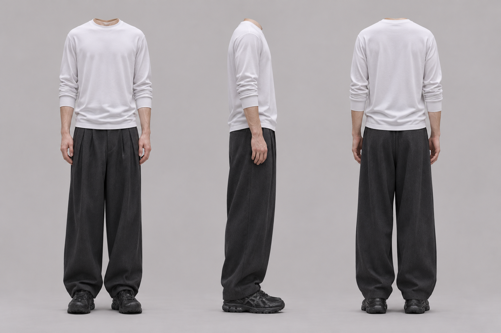

여성 얼굴은 첨부 1번의 정면과 사선 얼굴을 사용한다. 뽀얗고 투명한 피부결과 광택을 살리고 눈가에 옅은 베이비핑크를 남긴다. 후면 컷은 집중 참고 13-06·07의 연두색 착장 인물처럼 등을 보인다. 옷은 장면마다 바꿀 수 있다. 남성 얼굴은 첨부 6번, 체형과 바지·검정 살로몬 계열 신발은 5번 및 남성 스타일 참고를 따른다. 인물 구성은 여성·남성·어린이이며 어린이 얼굴 기준은 추후 지정한다.




여행 장면과 수영장 35장에서 장면별 구도를 고른다. 마데이라 벤치 분석을 수영장에 적용하는 예시 — 0~2.5초 데크를 내려다보며 수면을 가린다. 2.5~5.5초 데크 옆을 지나며 틸트업한다. 5.5~8.5초 수면과 산을 와이드로 공개한다. 8.5~11초 전경과 원경 사이 시차를 살려 천천히 재구성한다. 11~13.47초 카메라를 멈추고 잔물결만 남긴다. 한 연속 샷에서 데크 모서리와 수평선이 휘거나 뛰면 재검수한다.
마데이라 원본 분석